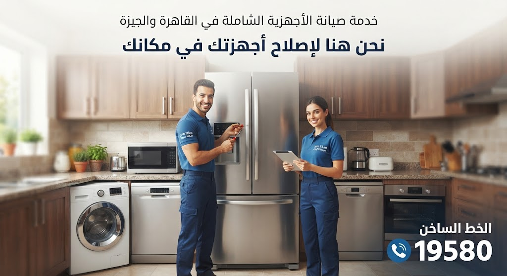
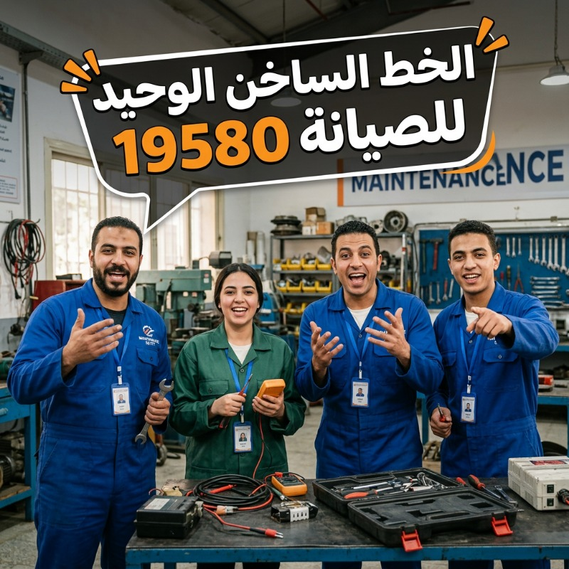
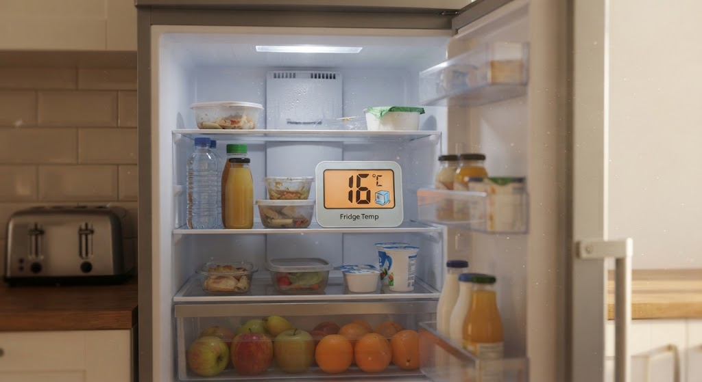
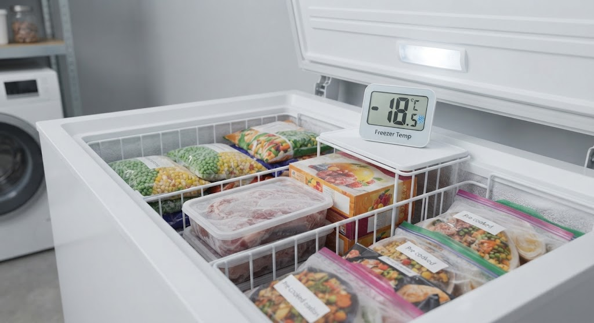
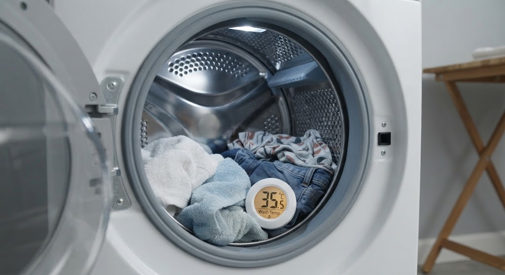
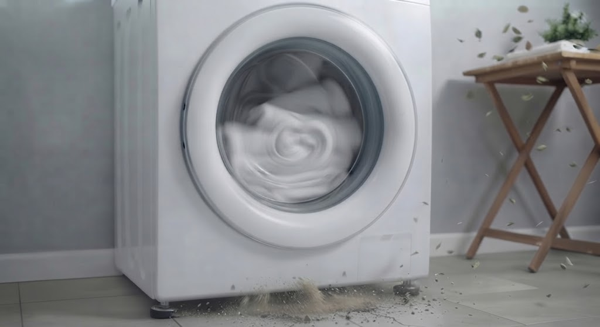
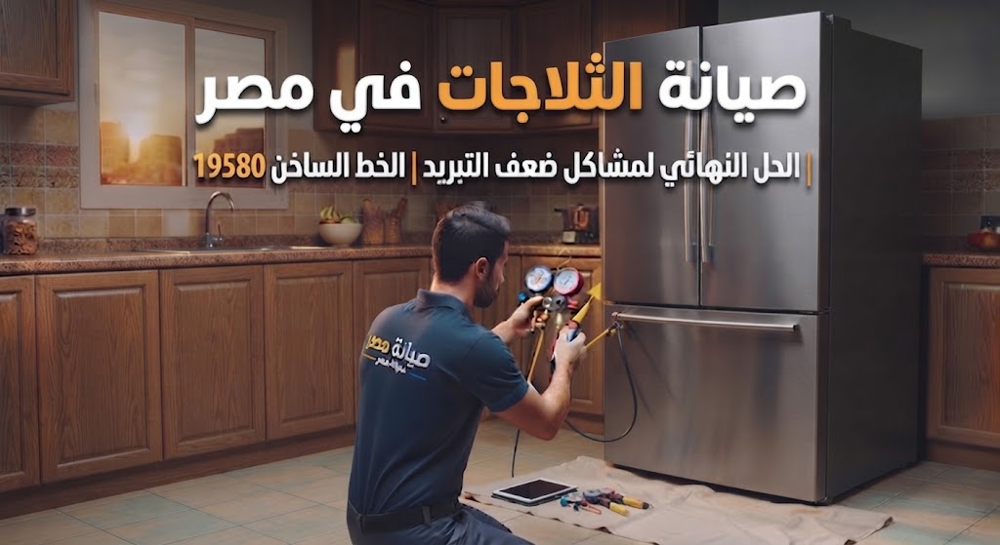
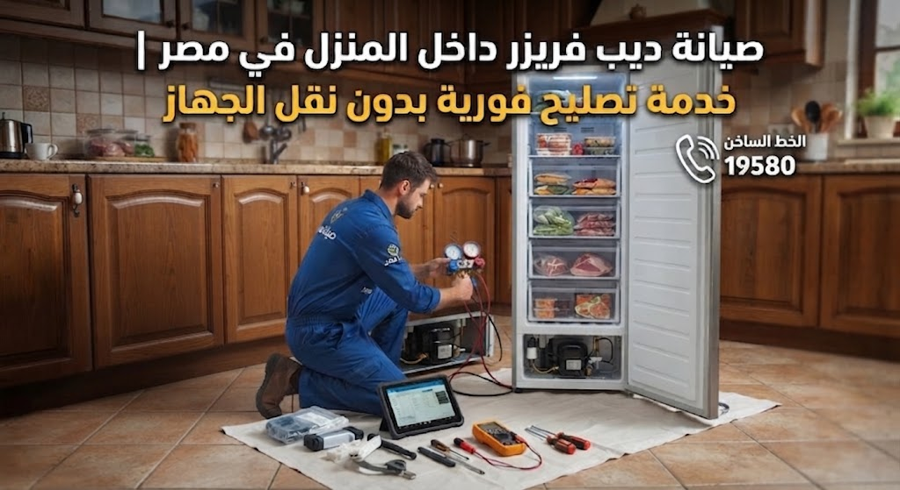
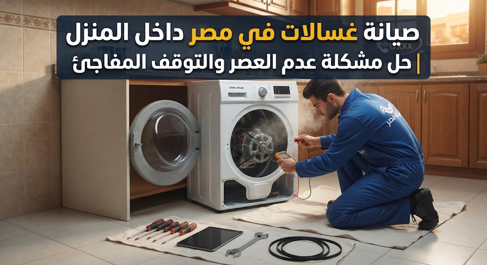
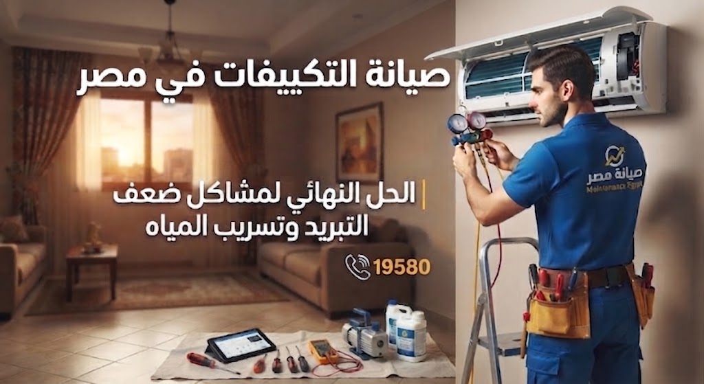

أفضل صيانة أجهزة منزلية في مصر | صيانة ثلاجات وغسالات وتكييفات كريازي وتصليح فوري داخل المنزل
هل تبحث عن صيانة الأجهزة المنزلية في مصر بسبب ضعف تبريد الثلاجة، أو توقف الغسالة فجأة، أو وجود مشكلة في التكييف ؟
تُعد هذه الأعطال من أكثر المشكلات شيوعًا مع الاستخدام اليومي المستمر، خاصة في الأجهزة الأساسية مثل الثلاجات، الغسالات، الديب فريزر، غسالات الأطباق، المجففات، حيث تبدأ المشكلة غالبًا بشكل بسيط قبل أن تتطور تدريجيًا إلى عطل أكبر وأكثر تكلفة.
في معظم الحالات، لا تحدث الأعطال بشكل مفاجئ، بل تظهر على هيئة علامات أولية واضحة مثل:
- ضعف كفاءة التبريد أو التسخين
- صدور أصوات غير طبيعية أثناء التشغيل
- زيادة ملحوظة في استهلاك الكهرباء
- توقف الجهاز بشكل متكرر أو بطء في الأداء
هذه المؤشرات تدل على وجود خلل في مكونات أساسية مثل الموتور، أنظمة التسخين، أو دورة التبريد، وهو ما يتطلب تدخل فني متخصص في صيانة الأجهزة المنزلية قبل تفاقم المشكلة.
تشير الخبرة العملية في مجال صيانة الأجهزة المنزلية في مصر إلى أن تجاهل هذه العلامات المبكرة يؤدي غالبًا إلى أعطال أكثر تعقيدًا، وقد يتسبب في تلف أجزاء رئيسية داخل الجهاز، خاصة في الأجهزة الحساسة مثل الثلاجات والديب فريزر والسخانات.
لذلك، فإن التشخيص المبكر والصيانة الفورية داخل المنزل لا يساعد فقط في إصلاح العطل بكفاءة، بل يساهم أيضًا في تقليل التكاليف، والحفاظ على كفاءة الجهاز، وإطالة عمره الافتراضي بشكل ملحوظ.
لماذا تختار خدمة صيانة الأجهزة المنزلية في القاهرة والجيزة؟

- فحص دقيق لتحديد سبب العطل من الجذور
- صيانة فورية داخل المنزل بدون الحاجة لنقل الجهاز
- التعامل مع جميع الأجهزة والماركات
- تحسين كفاءة التشغيل وتقليل استهلاك الكهرباء
- حلول دائمة لتجنب الأعطال المتكررة
متى تحتاج إلى فني صيانة أجهزة منزلية؟
إذا لاحظت أي من العلامات التالية، لا تؤجل الصيانة:
- الثلاجة لا تبرد بشكل كاف
- الغسالة لا تعمل أو تتوقف فجأة
- السخان لا يسخن المياه
- ضعف في أداء البوتاجاز أو وجود تسريب
احجز الآن خدمة صيانة فورية في مصر
لا تنتظر حتى يتحول العطل البسيط إلى مشكلة أكبر وأكثر تكلفة. نقدم خدمات صيانة الأجهزة المنزلية في القاهرة والجيزة والإسكندرية وجميع المحافظات سرعة استجابة عالية داخل المنزل.
اتصل الآن بالخط الساخن الموحد 19580 واحصل على تشخيص فوري من فني متخصص مع تقديم حل نهائي بأفضل تكلفة ممكنة.
أشهر أعطال الأجهزة المنزلية في مصر (الثلاجة، الغسالة، الديب فريزر) وأسبابها

تُعد أعطال الأجهزة المنزلية في مصر من أكثر المشكلات شيوعًا داخل المنازل، خاصة مع الاستخدام اليومي المستمر للأجهزة الأساسية مثل الثلاجات والغسالات والديب فريزر. وغالبًا ما تظهر علامات مبكرة تشير إلى وجود خلل، ما يساعد على تشخيص العطل بسرعة والتدخل قبل تفاقم المشكلة أو ارتفاع تكلفة الإصلاح.
فيما يلي أبرز الأعطال الشائعة وأسبابها، مع مؤشرات تساعدك على اتخاذ القرار المناسب في الوقت المناسب:
ضعف تبريد الثلاجة

يعتبر ضعف تبريد الثلاجة من أشهر أعطال الأجهزة المنزلية في مصر، وغالبًا ما يكون ناتجًا عن خلل في دورة التبريد مثل نقص الفريون أو ضعف كفاءة الكومبروسر.
وفي بعض الحالات، قد يكون السبب بسيطًا مثل:
- اتساخ المكثف
- ضعف التهوية خلف الثلاجة
- فتح الباب بشكل متكرر
متى تحتاج فني صيانة ثلاجات؟ إذا لاحظت أن الطعام لا يبرد بشكل كاف أو أن درجة الحرارة غير مستقرة، فهذه علامة واضحة ووجود عطل يتطلب فحص فني صيانة ثلاجات متخصص قبل أن يتفاقم.
تسريب مياه من الديب فريزر

يعد تسريب المياه من الديب فريزر من الأعطال الشائعة، وغالبًا ما يحدث نتيجة:
- انسداد مجرى تصريف المياه
- تراكم الثلج داخل الجهاز بشكل غير طبيعي
هذا العطل يؤدي إلى تجمع المياه داخل الجهاز أو أسفله، وقد يتسبب في تلف أجزاء داخلية إذا لم يتم التعامل معه سريعًا.
نصيحة صيانة ديب فريزر: ينصح بإجراء تنظيف دوري لمجرى التصريف لتجنب هذه المشكلة والحفاظ على كفاءة الجهاز، وتقليل الحاجة لطلب فني صيانة ديب فريزر.
توقف الغسالة عن العمل

توقف الغسالة فجأة من أكثر الأعطال إزعاجًا، وقد يكون سببه:
- عطل في الموتور
- خلل في لوحة التحكم الإلكترونية
- مشكلة في التوصيلات الكهربائية
- تحميل زائد على الغسالة
كما قد يحدث بسبب اختيار برنامج تشغيل غير مناسب لنوع أو كمية الملابس، وهو سبب شائع يغفله الكثير من المستخدمين.
متى تحتاج فني صيانة غسالات؟ إذا لم تعمل الغسالة بعد إعادة التشغيل أو فصل الكهرباء، فمن الأفضل طلب فني صيانة غسالات لتشخيص المشكلة بدقة ومنع تفاقم العطل.
صوت مرتفع أو اهتزاز أثناء التشغيل

صدور صوت عالي أو اهتزاز قوي أثناء تشغيل الغسالة يشير غالبًا إلى:
- مشكلة في الحلة الداخلية
- تلف المساعدين
- عدم توازن الجهاز على الأرض
حل سريع: تأكد من وضع الجهاز على سطح مستو وثابت. أما إذا استمر الصوت، فيجب فحص الجهاز بواسطة فني صيانة أجهزة منزلية لتجنب حدوث تلف أكبر.
صيانة الأجهزة المنزلية في مصر | خدمة فورية داخل المنزل 24 ساعة بضمان معتمد
مع الاستخدام اليومي للأجهزة المنزلية في كل بيت، أصبحت صيانة الأجهزة المنزلية في مصر ضرورة أساسية عند حدوث أي عطل مفاجئ في الثلاجات أو الغسالات أو البوتاجازات أو السخانات أو الديب فريزر.
نوفّر خدمة صيانة منزلية متكاملة تعتمد على تشخيص دقيق باستخدام أحدث أدوات الفحص، مع تقديم حلول جذرية تعالج سبب العطل وليس أعراضه، مما يقلل تكرار الأعطال ويطيل العمر الافتراضي للأجهزة.
خدمات صيانة الأجهزة المنزلية التي نقدمها
نقدم تصليح الأجهزة المنزلية داخل المنزل بدون الحاجة لنقل الجهاز، وتشمل:
- صيانة الثلاجات وإصلاح مشاكل التبريد
- صيانة الغسالات (فوق أوتوماتيك - فول أوتوماتيك)
- صيانة البوتاجازات والسخانات
- صيانة الديب فريزر
- صيانة غسالات الأطباق والمجففات
يتم تنفيذ العمل بعد فحص شامل لتحديد السبب الجذري للعطل، ثم اختيار الحل الأنسب لكل جهاز لضمان أفضل نتيجة وتقليل تكرار المشكلة.
مميزات خدمة الصيانة لدينا
- صيانة منزلية فورية داخل جميع مناطق مصر
- استجابة سريعة في نفس اليوم
- تشخيص دقيق قبل بدء الإصلاح
- حلول فعالة تمنع تكرار العطل
- خفض تكلفة الصيانة على المدى الطويل
- دعم فني ومتابعة بعد الخدمة
صيانة الثلاجات في مصر | الحل النهائي لمشاكل ضعف التبريد

هل تعاني من ضعف التبريد في الثلاجة أو تلف الطعام بشكل متكرر داخل المنزل؟
تُعد هذه المشكلة من أكثر أعطال الثلاجات شيوعًا في مصر، وغالبًا ما تتطلب تدخل فني صيانة ثلاجات متخصص بسرعة لتجنب تفاقم العطل أو توقف الجهاز بالكامل.
في أغلب الحالات، لا يظهر العطل بشكل مفاجئ، بل يبدأ تدريجيًا من خلال علامات واضحة تشير إلى وجود خلل في أحد المكونات الأساسية مثل:
- دورة التبريد
- موتور الثلاجة (الكمبروسر)
- حساس الحرارة
لذلك فإن التشخيص الدقيق بواسطة فني محترف يساعد على إصلاح المشكلة من جذورها وتقليل تكلفة الصيانة وتجنب الحلول المؤقتة التي تؤدي إلى تكرار العطل.
صيانة ديب فريزر داخل المنزل في مصر | خدمة تصليح فورية بدون نقل الجهاز

يعد الديب فريزر من أهم الأجهزة المنزلية الأساسية داخل أي منزل، لأن أي عطل فيه قد يؤدي إلى تلف كميات كبيرة من الطعام خلال وقت قصير.
أشهر أعطال الديب فريزر التي تحتاج إلى صيانة فورية
- ضعف التجميد داخل الديب فريزر
- توقف التجميد نهائيًا
- تراكم الثلج داخل الأدراج
- صدور صوت مرتفع أثناء التشغيل
- تسريب مياه من الجهاز
- توقف موتور الديب فريزر بشكل مفاجئ
ظهور أي من هذه العلامات يشير إلى وجود عطل داخلي يحتاج إلى فني صيانة ديب فريزر متخصص لتشخيصه وإصلاحه بسرعة.
صيانة غسالات في مصر داخل المنزل | حل مشكلة عدم العصر والتوقف المفاجئ

تعد مشكلة توقف الغسالة عن العصر أو التوقف المفاجئ أثناء التشغيل من أكثر أعطال الغسالات في مصر شيوعًا، وغالبًا ما تبدأ بشكل تدريجي نتيجة ضعف الأداء أو وجود خلل في المكونات الداخلية.
نقدم خدمة صيانة غسالات في مصر تشمل القاهرة والجيزة والإسكندرية وجميع المحافظات، من خلال فني صيانة غسالات متخصص قادر على تشخيص الأعطال بدقة وإصلاحها في نفس اليوم.
الأسباب الشائعة لأعطال الغسالات الأوتوماتيك
تحدث معظم الأعطال بسبب:
- خلل في موتور الغسالة
- عطل في لوحة التحكم الإلكترونية
- تلف طلمبة صرف المياه
- مشكلة في حساس مستوى المياه
- انسداد خرطوم الصرف
- تحميل زائد على الغسالة
نصيحة مهمة: يفضل دائمًا التشخيص الدقيق قبل تغيير أي قطعة غيار لتجنب تكاليف إضافية بدون داع.
متى تحتاج إلى فني صيانة غسالات فول؟
يُنصح بطلب الصيانة فورًا في الحالات التالية:
- توقف الغسالة قبل انتهاء البرنامج
- ضعف أو عدم العصر
- تسريب مياه أثناء التشغيل
- بطء في سحب أو تصريف المياه
⚠️ هذه العلامات تشير غالبًا إلى مشكلة في الموتور أو طلمبة الصرف أو لوحة التحكم.
تشخيص سريع لأعطال الغسالات
- توقف التشغيل: مشكلة كهربائية أو لوحة التحكم
- ضعف العصر: عطل في الموتور أو تحميل زائد
- عدم تصريف المياه: طلمبة صرف أو انسداد
⚠️ مهم: التشخيص النهائي يجب أن يتم بواسطة فني متخصص لضمان إصلاح المشكلة من جذورها.
خدمة صيانة الغسالات المنزلية في مصر
نقدم خدمة صيانة شاملة داخل المنزل بدون الحاجة إلى نقل الغسالة، وتشمل:
- فحص شامل باستخدام أدوات حديثة
- تحديد سبب العطل بدقة
- إصلاح فوري داخل نفس اليوم
- استخدام قطع غيار مناسبة
- ضمان على أعمال الصيانة
احجز الآن صيانة غسالات في مصر (خدمة فورية)
لا تنتظر حتى تتوقف الغسالة بالكامل أو تتفاقم المشكلة.
احصل الآن على خدمة صيانة غسالات منزلية في مصر مع فني متخصص يصل إلى باب المنزل في أسرع وقت.
يمكنك طلب خدمة صيانة الغسالات في مصر داخل المنزل لحل جميع الأعطال بسرعة ودقة عبر الاتصال بالخط الساخن الموحد 19580.
صيانة التكييفات في مصر | الحل النهائي لمشاكل ضعف التبريد وتسريب المياه

هل تعاني من ضعف التبريد في التكييف، أو خروج هواء غير بارد بشكل كافٍ داخل المنزل؟
تُعد أعطال التكييفات من أكثر المشكلات شيوعًا في مصر، خاصة في فصل الصيف، وغالبًا ما تحتاج إلى تدخل فني صيانة تكييفات متخصص لتجنب تدهور الأداء أو توقف الجهاز بالكامل.
في أغلب الحالات، لا يحدث العطل فجأة، بل يبدأ تدريجيًا نتيجة خلل في أحد المكونات الأساسية مثل:
- دورة التبريد
- الفريون
- الكومبروسر (الموتور)
- الفلاتر الداخلية
كما قد يكون السبب تراكم الأتربة داخل الوحدة الداخلية أو الخارجية، مما يؤدي إلى ضعف واضح في كفاءة التبريد.
لذلك فإن التشخيص الدقيق بواسطة فني تكييف متخصص يساعد على تحديد السبب الحقيقي للعطل وإصلاحه من الجذور.
اتصل الآن بالخط الساخن 19580 لطلب خدمة صيانة تكييفات قريب منك وإصلاح فوري داخل المنزل.
أشهر أعطال التكييفات في مصر
من أبرز الأعطال الشائعة:
- ضعف أو توقف التبريد
- تسريب مياه من الوحدة الداخلية
- خروج هواء ضعيف
- صدور صوت غير طبيعي أثناء التشغيل
- ارتفاع استهلاك الكهرباء
⚠️ هذه العلامات تشير إلى وجود عطل يحتاج إلى فحص فوري قبل تفاقم المشكلة وزيادة تكلفة الإصلاح.
متى تحتاج إلى صيانة تكييف فول؟
يُنصح بطلب فني صيانة تكييفات في مصر فور ملاحظة أي من الحالات التالية:
- ضعف واضح في التبريد
- نزول مياه من التكييف
- توقف مفاجئ عن العمل
- صوت مرتفع أو اهتزاز غير طبيعي
⚠️ تحذير مهم: إهمال هذه العلامات قد يؤدي إلى تلف الكومبروسر، وهو من أغلى أجزاء التكييف، مما يرفع تكلفة الإصلاح بشكل كبير.
خدمة صيانة التكييفات المنزلية في مصر
نوفر خدمة صيانة تكييفات داخل المنزل في جميع محافظات مصر بدون الحاجة لنقل الجهاز، وتشمل:
- فحص شامل للوحدة الداخلية والخارجية
- تحديد سبب العطل بدقة
- شحن فريون عند الحاجة
- تنظيف الفلاتر والمواسير
- إصلاح فوري في نفس اليوم
- ضمان على أعمال الصيانة
احجز الآن صيانة تكييف في مصر
لا تنتظر حتى يتوقف التكييف عن العمل في أشد أيام الحرارة.
احصل الآن على خدمة صيانة تكييفات منزلية فورية داخل جميع محافظات مصر مع فني متخصص يصل إلى منزلك في نفس اليوم.
اتصل الآن للحصول على:
- تشخيص دقيق للعطل
- إصلاح داخل المنزل
- حل نهائي بأفضل تكلفة ممكنة عبر الخط الساخن 19580
للتعرف على كل ما يخص خدمات الصيانة المنزلية داخل مصر مثل الأسعار، مدة الإصلاح، الضمان، وطريقة طلب الخدمة.